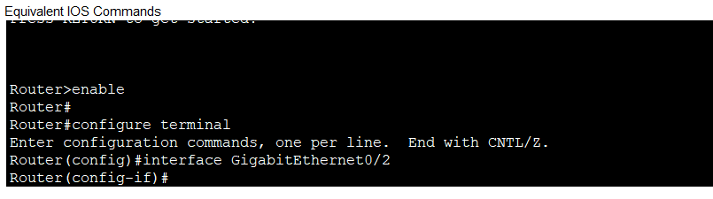
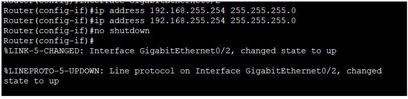

Cisco



Configurer adresse IP sur interface
Il faut tout d'abord utiliser enable puis configure terminal pour entrer en mode de configuration.
Il faut ensuite choisir l'interface pour la quelle on souhaite attribuer une adresse IP.
On active ensuite l'interface en faisant un no shutdown
Router>enable
Router#configure terminal
Router(config)#interface GigabitEthernet0/2
Router(config-if)#ip address 192.168.255.254 255.255.255.0
Router(config-if)#no shutdown
Configurer une route
Il faut utiliser enable puis configure terminal pour entrer en mode de configuration.
Donner la description de la route que l'on souhaite ajouter en utilisant la commande ip route.
Router>enable
Router#configure terminal
Router(config)#ip route 192.168.1.0 255.255.255.0 192.168.0.254
Créer un vlan
Il faut d'abord entrer en mode de configuration en utilisant les commandes enable puis configure terminal.
Utiliser la commande vlan pour créer un VLAN.
On peut ensuite donner un nom au VLAN avec la commande name.
Switch>enable
Switch#configure terminal
Switch(config)#vlan (nombre)
Switch(config-vlan)#name (Nom)
Mettre les ports dans le vlan
Il faut tout d'abord utiliser les commandes enable puis configure terminal pour entrer en mode de configuration.
On sélectionne ensuite la plage d'interfaces que l'on souhaite configurer avec la commande interface range.
On change ensuite le mode en access puis on l'ajoute dans le vlan.
Switch>enable
Switch#configure terminal
Switch(config)#interface range fa0/(nombre-nombre)
Switch(config-if-range)#switchport mode access
Switch(config-if-range)#switchport access vlan (nombre)
Faire un trunk
Il faut tout d'abord utiliser les commandes enable puis configure terminal pour entrer en mode de configuration.
On choisit ensuite l'interface que l'on souhaite configurer, puis on la met en mode trunk.
On fait la même chose sur l'autre switch, puis on passe les interfaces en nonegotiate sur les deux switchs.
Switch1>enable
Switch1#configure terminal
Switch1(config)#interface g0/1
Switch1(config-if)#switchport mode trunk
Switch2>enable
Switch2#configure terminal
Switch2(config)#interface g0/1
Switch2(config-if)#switchport mode trunk
Switch1(config-if)#switchport nonegotiate
Switch2(config-if)#switchport nonegotiate
Config routeur vlan
Il faut tout d'abord utiliser les commandes enable puis configure terminal pour entrer en mode de configuration.
On crée une interface virtuelle sur le routeur puis on change l'encapsulation en dot1Q puis on ajoute l'adresse ip sur l'interface.
On configure ensuite le switch, en mettant l'interface de celui-ci en mode trunk.
Router>enable
Router#configure terminal
Router(config)#interface g0/0.<nombre>
Router(config-if)#encapsulation dot1Q <nombre vlan>
Router(config-if)#ip address <adresse> <masque>
Switch>enable
Switch#configure terminal
Switch(config)#interface fa0/<nombre>
Switch(config-if)#switchport mode trunk
Config Switch multi-layer
Il faut tout d'abord utiliser les commandes enable puis configure terminal pour entrer en mode de configuration.
On met les interfaces reliées aux switchs en mode trunk.
On utilise ensuite la commande interface avec un vlan, puis on configure l'adresse IP de l'interface pour ce vlan.
Switch>enable
Switch#configure terminal
Switch(config)#interface g1/0/<nombre>
Switch(config-if)#switchport mode trunk
Switch(config)#vlan <nombre>
Switch(config)#interface vlan <nombre>
Switch(config-if)#ip address <adresse> <masque>